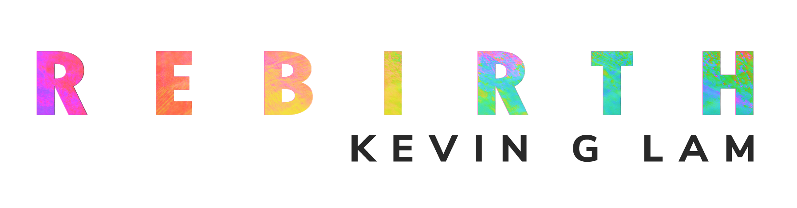

Heritage II: Rebirth
Heritage II is a video project that takes a look at the three most important stages of life in Asian Culture: Birth, Marriage and Death. The video takes the viewer on a journey into the cultural exploration of the cycle of life. Through various representations and symbols of life in Asian culture, we are thrown into a melting pot of tradition. Whether the viewer is a tourist or homecomer, this video is a visual representation of the come and go of life as well as the value in renewal.


These are accompanying visuals that were posted on Instagram as teasers for the release of Heritage II: Rebirth.

This poster was made to accompany the video and it is featured side by side with the video in exhibition spaces.
Video teasers were made to give a sneak peek of the project. These were posted on Instagram with the image teasers.
These are photos from the photoshoot that was done on set. The pictures were used to create the visual teasers.